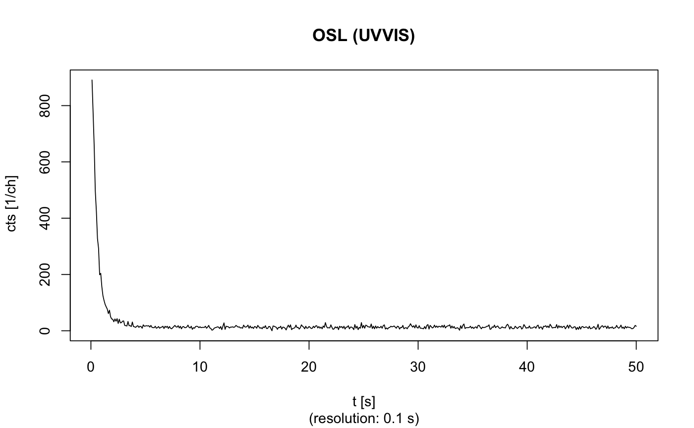

Example data for a SAR OSL measurement and a TL spectrum using a lexsyg reader
Example data from a SAR OSL measurement and a TL spectrum for package Luminescence imported from a Freiberg Instruments XSYG file using the function read_XSYG2R.
Format
OSL.SARMeasurement: SAR OSL measurement data
The data contain two elements: (a) $Sequence.Header is a
data.frame with metadata from the measurement,(b)
Sequence.Object contains an RLum.Analysis object
for further analysis.
TL.Spectrum: TL spectrum data
RLum.Data.Spectrum object for further analysis. The
spectrum was cleaned from cosmic-rays using the function
apply_CosmicRayRemoval. Note that no quantum efficiency calibration
was performed.
Source
OSL.SARMeasurement
| Lab: | Luminescence Laboratory Giessen |
| Lab-Code: | no code |
| Location: | not specified |
| Material: | Coarse grain quartz on steel cups on lexsyg research reader |
TL.Spectrum
| Lab: | Luminescence Laboratory Giessen |
| Lab-Code: | BT753 |
| Location: | Dolni Vestonice/Czech Republic |
| Material: | Fine grain polymineral on steel cups on lexsyg rearch reader |
| Reference: | Fuchs et al., 2013 |
| Spectrum: | Integration time 19 s, channel time 20 s |
Version
0.1
References
Unpublished data measured to serve as example data for that package. Location origin of sample BT753 is given here:
Fuchs, M., Kreutzer, S., Rousseau, D.D., Antoine, P., Hatte, C., Lagroix, F., Moine, O., Gauthier, C., Svoboda, J., Lisa, L., 2013. The loess sequence of Dolni Vestonice, Czech Republic: A new OSL-based chronology of the Last Climatic Cycle. Boreas, 42, 664--677.
See also
read_XSYG2R, RLum.Analysis, RLum.Data.Spectrum, plot_RLum, plot_RLum.Analysis, plot_RLum.Data.Spectrum
Examples
##show data data(ExampleData.XSYG, envir = environment()) ## ========================================= ##(1) OSL.SARMeasurement OSL.SARMeasurement#> $Sequence.Header #> #> state finished #> parentID 1002220348205854 #> name R Luminescence example dataset #> position 30 #> comment example dataset #> startDate 20140222034820 #> protocol SAR #> mineral quartz #> #> $Sequence.Object #> #> [RLum.Analysis-class] #> originator: read_XSYG2R() #> protocol: SAR #> additional info elements: 0 #> number of records: 124 #> .. : RLum.Data.Curve : 124 #> .. .. : #1 TL (UVVIS) <> #2 TL (NA) <> #3 TL (NA) #> .. .. : #4 OSL (UVVIS) <> #5 OSL (NA) <> #6 OSL (NA) <> #7 OSL (NA) <> #8 OSL (NA) #> .. .. : #9 irradiation (NA) #> .. .. : #10 TL (UVVIS) <> #11 TL (NA) <> #12 TL (NA) #> .. .. : #13 OSL (UVVIS) <> #14 OSL (NA) <> #15 OSL (NA) <> #16 OSL (NA) <> #17 OSL (NA) #> .. .. : #18 irradiation (NA) #> .. .. : #19 TL (UVVIS) <> #20 TL (NA) <> #21 TL (NA) #> .. .. : #22 OSL (UVVIS) <> #23 OSL (NA) <> #24 OSL (NA) <> #25 OSL (NA) <> #26 OSL (NA) #> .. .. : #27 irradiation (NA) #> .. .. : #28 TL (UVVIS) <> #29 TL (NA) <> #30 TL (NA) #> .. .. : #31 OSL (UVVIS) <> #32 OSL (NA) <> #33 OSL (NA) <> #34 OSL (NA) <> #35 OSL (NA) #> .. .. : #36 irradiation (NA) #> .. .. : #37 TL (UVVIS) <> #38 TL (NA) <> #39 TL (NA) #> .. .. : #40 OSL (UVVIS) <> #41 OSL (NA) <> #42 OSL (NA) <> #43 OSL (NA) <> #44 OSL (NA) #> .. .. : #45 irradiation (NA) #> .. .. : #46 TL (UVVIS) <> #47 TL (NA) <> #48 TL (NA) #> .. .. : #49 OSL (UVVIS) <> #50 OSL (NA) <> #51 OSL (NA) <> #52 OSL (NA) <> #53 OSL (NA) #> .. .. : #54 irradiation (NA) #> .. .. : #55 TL (UVVIS) <> #56 TL (NA) <> #57 TL (NA) #> .. .. : #58 OSL (UVVIS) <> #59 OSL (NA) <> #60 OSL (NA) <> #61 OSL (NA) <> #62 OSL (NA) #> .. .. : #63 irradiation (NA) #> .. .. : #64 TL (UVVIS) <> #65 TL (NA) <> #66 TL (NA) #> .. .. : #67 OSL (UVVIS) <> #68 OSL (NA) <> #69 OSL (NA) <> #70 OSL (NA) <> #71 OSL (NA) #> .. .. : #72 irradiation (NA) #> .. .. : #73 TL (UVVIS) <> #74 TL (NA) <> #75 TL (NA) #> .. .. : #76 OSL (UVVIS) <> #77 OSL (NA) <> #78 OSL (NA) <> #79 OSL (NA) <> #80 OSL (NA) #> .. .. : #81 irradiation (NA) #> .. .. : #82 TL (UVVIS) <> #83 TL (NA) <> #84 TL (NA) #> .. .. : #85 OSL (UVVIS) <> #86 OSL (NA) <> #87 OSL (NA) <> #88 OSL (NA) <> #89 OSL (NA) #> .. .. : #90 TL (UVVIS) <> #91 TL (NA) <> #92 TL (NA) #> .. .. : #93 OSL (UVVIS) <> #94 OSL (NA) <> #95 OSL (NA) <> #96 OSL (NA) <> #97 OSL (NA) #> .. .. : #98 irradiation (NA) #> .. .. : #99 TL (UVVIS) <> #100 TL (NA) <> #101 TL (NA) #> .. .. : #102 OSL (UVVIS) <> #103 OSL (NA) <> #104 OSL (NA) <> #105 OSL (NA) <> #106 OSL (NA) #> .. .. : #107 irradiation (NA) #> .. .. : #108 TL (UVVIS) <> #109 TL (NA) <> #110 TL (NA) #> .. .. : #111 OSL (UVVIS) <> #112 OSL (NA) <> #113 OSL (NA) <> #114 OSL (NA) <> #115 OSL (NA) #> .. .. : #116 irradiation (NA) #> .. .. : #117 TL (UVVIS) <> #118 TL (NA) <> #119 TL (NA) #> .. .. : #120 OSL (UVVIS) <> #121 OSL (NA) <> #122 OSL (NA) <> #123 OSL (NA) <> #124 OSL (NA)##show $Sequence.Object OSL.SARMeasurement$Sequence.Object#> #> [RLum.Analysis-class] #> originator: read_XSYG2R() #> protocol: SAR #> additional info elements: 0 #> number of records: 124 #> .. : RLum.Data.Curve : 124 #> .. .. : #1 TL (UVVIS) <> #2 TL (NA) <> #3 TL (NA) #> .. .. : #4 OSL (UVVIS) <> #5 OSL (NA) <> #6 OSL (NA) <> #7 OSL (NA) <> #8 OSL (NA) #> .. .. : #9 irradiation (NA) #> .. .. : #10 TL (UVVIS) <> #11 TL (NA) <> #12 TL (NA) #> .. .. : #13 OSL (UVVIS) <> #14 OSL (NA) <> #15 OSL (NA) <> #16 OSL (NA) <> #17 OSL (NA) #> .. .. : #18 irradiation (NA) #> .. .. : #19 TL (UVVIS) <> #20 TL (NA) <> #21 TL (NA) #> .. .. : #22 OSL (UVVIS) <> #23 OSL (NA) <> #24 OSL (NA) <> #25 OSL (NA) <> #26 OSL (NA) #> .. .. : #27 irradiation (NA) #> .. .. : #28 TL (UVVIS) <> #29 TL (NA) <> #30 TL (NA) #> .. .. : #31 OSL (UVVIS) <> #32 OSL (NA) <> #33 OSL (NA) <> #34 OSL (NA) <> #35 OSL (NA) #> .. .. : #36 irradiation (NA) #> .. .. : #37 TL (UVVIS) <> #38 TL (NA) <> #39 TL (NA) #> .. .. : #40 OSL (UVVIS) <> #41 OSL (NA) <> #42 OSL (NA) <> #43 OSL (NA) <> #44 OSL (NA) #> .. .. : #45 irradiation (NA) #> .. .. : #46 TL (UVVIS) <> #47 TL (NA) <> #48 TL (NA) #> .. .. : #49 OSL (UVVIS) <> #50 OSL (NA) <> #51 OSL (NA) <> #52 OSL (NA) <> #53 OSL (NA) #> .. .. : #54 irradiation (NA) #> .. .. : #55 TL (UVVIS) <> #56 TL (NA) <> #57 TL (NA) #> .. .. : #58 OSL (UVVIS) <> #59 OSL (NA) <> #60 OSL (NA) <> #61 OSL (NA) <> #62 OSL (NA) #> .. .. : #63 irradiation (NA) #> .. .. : #64 TL (UVVIS) <> #65 TL (NA) <> #66 TL (NA) #> .. .. : #67 OSL (UVVIS) <> #68 OSL (NA) <> #69 OSL (NA) <> #70 OSL (NA) <> #71 OSL (NA) #> .. .. : #72 irradiation (NA) #> .. .. : #73 TL (UVVIS) <> #74 TL (NA) <> #75 TL (NA) #> .. .. : #76 OSL (UVVIS) <> #77 OSL (NA) <> #78 OSL (NA) <> #79 OSL (NA) <> #80 OSL (NA) #> .. .. : #81 irradiation (NA) #> .. .. : #82 TL (UVVIS) <> #83 TL (NA) <> #84 TL (NA) #> .. .. : #85 OSL (UVVIS) <> #86 OSL (NA) <> #87 OSL (NA) <> #88 OSL (NA) <> #89 OSL (NA) #> .. .. : #90 TL (UVVIS) <> #91 TL (NA) <> #92 TL (NA) #> .. .. : #93 OSL (UVVIS) <> #94 OSL (NA) <> #95 OSL (NA) <> #96 OSL (NA) <> #97 OSL (NA) #> .. .. : #98 irradiation (NA) #> .. .. : #99 TL (UVVIS) <> #100 TL (NA) <> #101 TL (NA) #> .. .. : #102 OSL (UVVIS) <> #103 OSL (NA) <> #104 OSL (NA) <> #105 OSL (NA) <> #106 OSL (NA) #> .. .. : #107 irradiation (NA) #> .. .. : #108 TL (UVVIS) <> #109 TL (NA) <> #110 TL (NA) #> .. .. : #111 OSL (UVVIS) <> #112 OSL (NA) <> #113 OSL (NA) <> #114 OSL (NA) <> #115 OSL (NA) #> .. .. : #116 irradiation (NA) #> .. .. : #117 TL (UVVIS) <> #118 TL (NA) <> #119 TL (NA) #> .. .. : #120 OSL (UVVIS) <> #121 OSL (NA) <> #122 OSL (NA) <> #123 OSL (NA) <> #124 OSL (NA)##grep OSL curves and plot the first curve OSLcurve <- get_RLum(OSL.SARMeasurement$Sequence.Object, recordType="OSL")[[1]] plot_RLum(OSLcurve)## ========================================= ##(2) TL.Spectrum TL.Spectrum#> #> [RLum.Data.Spectrum-class] #> recordType: TL (Spectrometer) #> curveType: measured #> .. recorded frames: 24 #> .. .. measured values per frame: 1024 #> .. .. range wavelength/pixel: 296.5 823.126 #> .. .. range time/temp.: 0.029 460.007 #> .. .. range count values: 554 65405 #> additional info elements: 14##plot simple spectrum (2D) plot_RLum.Data.Spectrum(TL.Spectrum, plot.type="contour", xlim = c(310,750), ylim = c(0,300), bin.rows=10, bin.cols = 1)#> Warning: Last wavelength channel has been removed due to binning.##plot 3d spectrum (uncomment for usage) # plot_RLum.Data.Spectrum(TL.Spectrum, plot.type="persp", # xlim = c(310,750), ylim = c(0,300), bin.rows=10, # bin.cols = 1)